Story Chapters, Step by Step
All 10 story chapters with every step to tick, a walkthrough under each step and the choices you make in them, with what each answer gives.
10 chapters · walkthrough · choices →A blazing-fast, zero-ban-risk quest tracker and goal planner with an always-on-top, click-through in-game overlay. Track objectives live without Alt+Tabbing.
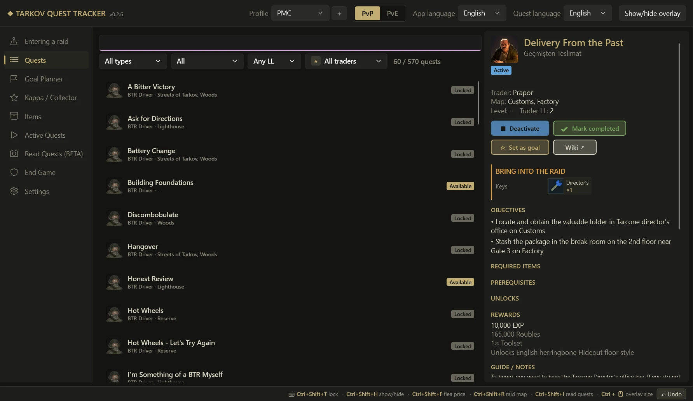
Designed from the ground up for seamless raiding, zero distractions, and ultimate progression.
All 10 story chapters with every step to tick, a walkthrough under each step and the choices you make in them, with what each answer gives.
10 chapters · walkthrough · choices →A screenshot brings up a round mini map around you in a corner of the game for a few seconds, clicks go through. Or keep the map on inside the app on your second monitor.
4 corners · turns with you · second screen →Take a screenshot in raid with your own screenshot key: a map window shows where you are and which way you face, your path, the exfils and your active quests' spots. The floor follows your height. Only the screenshot's file name is read.
Any screenshot key · tarkov.dev maps →Where were the Goons last seen? The "Entering a raid" page shows the latest reports from tarkov-goon-tracker.com for the mode you play (PvP or PvE), and the map card where they were seen gets a GOONS badge.
PvP + PvE · every 5 min →Where is the BTR now, and when does it reach the next stop? On Woods, Streets and Lighthouse the tracker works it out from the raid clock: the next stop and its ETA on the overlay, the route and the BTR on the map window, every stop on the raid page.
Woods · Streets · Lighthouse →Press O twice in raid: the tracker reads the exfil list, recognizes the map and starts the raid with the time left. Already in a raid? Only the time is updated. No keyboard hook, no key reading.
Exfil list · raid timer →Open the Tasks screen in game and scroll it once: the tracker reads your quests with the OCR built into Windows. Confirm the list and every earlier quest counts as done. Nothing is added to the game.
Windows OCR · 30 s scan →Pick the map you are going to, or let a double O pick it for you: the overlay shows every active quest on it by itself. Quests on several maps show only that map's objectives; hand-over steps are hidden. Ctrl+Shift+R picks the map without leaving the game.
Map picker · Ctrl+Shift+RKeys, how many markers you need, items to plant, the weapon to use and the clothes to wear are shown at the top of every quest and on its active quest card.
Keys · Markers · WeaponsComplete an active quest and the quests it unlocks become active. Make a quest your goal and the step you are at is activated. Nothing is pushed onto the overlay: you decide what to pin.
Auto-accept · Goal stepsSits on top of the game; drag it anywhere on screen. Shows the quests you pin, or in a raid every quest on that map. Lock it with Ctrl+Shift+T so clicks go straight to the game.
Always-on-top · Click-throughPick any target quest (like Punisher Part 6 or The Collector). The app calculates the exact chain, what to do right now, and what's left. Making a quest your goal activates the step you are at.
Chain solver · Map groupingMark Punisher Part 5 as active, and Parts 1–4 are automatically marked completed. Made a mistake? Undo in a single click.
Smart prerequisitesSeparate, isolated progress tracking for PvP and PvE raids. PvE-specific requirements and level discrepancies are built-in.
Independent savesSearch in English or Turkish. Tolerant of typos, alternate trader names, and accented characters (e.g., 'cezalandırıcı', 'punisher 3').
Instant searchYour data never leaves your computer. Multiple profiles allow several players or accounts on the same PC to track their own progress.
Zero telemetry · PortableSee which trader needs which items for which quest, grouped by trader, with item icons, counts and Found-in-Raid flags. Search an item to find every quest that wants it.
FIR flags · Item searchFind and hand-over objectives show the item's icon in quest details, the active quest list and the overlay, so you recognise loot at a glance mid-raid.
Overlay readyPress Ctrl+Shift+F mid-raid: a price search opens in the middle of the screen. Type 3 letters and see the flea price for your mode (PvP or PvE), price per slot and the best trader. Esc takes you back to the game.
PvP & PvE prices · tarkov.devMade to run next to the game all session: about 0% CPU when idle and a small memory footprint. Flea prices are only prepared for the mode you play.
~0% CPU when idleWhich of the 4 endings can you still reach, which way do you go, and where are you right now? Mark your decisions, pick a target ending and follow the route step by step.
4 endings · Route planner →No need to enter dozens of quests by hand. Open the Tasks screen in game, scroll it once, and the tracker reads every quest name. Confirm the list: the quests become active and everything before them counts as done.
Set the game language to English and run the game in Borderless or Windowed mode. Quest names are matched against the English names.
In game, open the TASKS page and go to Side tasks, so your quest list is on screen.
Press "Start scan" on the Read Quests (BETA) page and switch to the game. Scroll the list slowly to the bottom: it is read about every 0.7 s and the scan stops by itself after 30 seconds. Short list? Ctrl+Shift+I reads just the current screen.
Back in the tracker, untick anything read wrong and press "Apply". The quests become active, their earlier quests are marked done, and one click on "Undo" reverts it all.
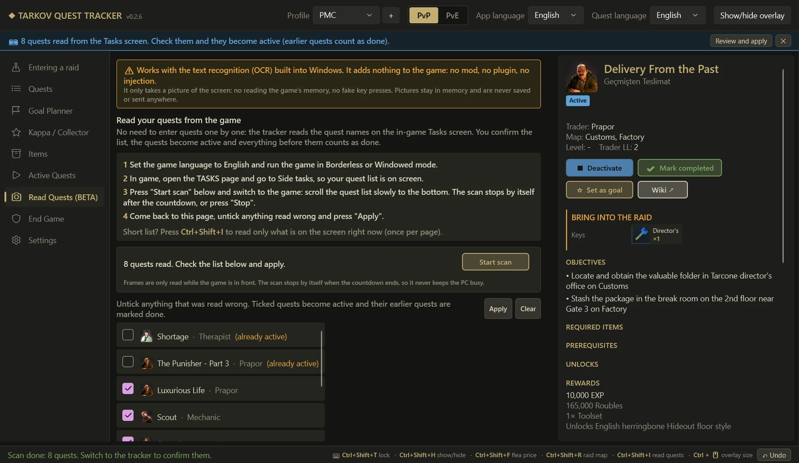
BETA: reading works best at 1080p or higher with the game in English. Nothing is changed until you press "Apply", and only what you tick is used.
A double O in raid lists your exfils at the top right. Their names tell the map, and the timer above them tells the time left. The tracker reads both and puts that map's quests and a raid countdown on the overlay.
The On / Off switch sits at the top of the "Entering a raid" page (on by default). Run the game in Borderless or Windowed mode The overlay can stay in the top-right corner: it is left out of screen pictures, so the list under it is still read (it also stays out of recordings and streams).
In raid, double-tap O as usual. The exfil list opens in game exactly as before: the tracker only looks at the screen, the key still goes to the game.
Not every PC draws the list at once. Once the first exfils show up, the corner is read again until no new ones appear (up to about 3 s), and only then is the map decided. An empty corner just means you are not in a raid: no error.
The overlay switches to that map's quests and counts the raid time down. Already in a raid there? A double O only corrects the time, it never restarts the raid. The overlay locks by itself so clicks go to the game. When the time runs out, the raid ends by itself. A single O (just the clock) corrects the time of a raid already running. FPS counter on? The clock under it is still read, to the minute.
BETA: it needs an exfil only that map has, and two exfils in all on the big maps. When it is not sure it does nothing, and you can always pick the map yourself with Ctrl+Shift+R.
Lost on the map? Press your screenshot key in raid. The game writes your position into the screenshot's file name; the tracker reads that name and a map window opens with you on it: which way you face, your path, the exfils and your active quests' spots.
The map follows the raid's map, picked on "Entering a raid" or found by the double O. Not in a raid? Pick the map in the map window.
Use your in-game screenshot key. Any key you bound works: the app watches the screenshot folder, not the key.
The arrow shows where you stand and which way you face; earlier screenshots draw your path. The floor follows your height. Wheel zooms, dragging looks around, ◎ centres on you again.
Press Esc or click the game: the map closes and the game gets the keyboard back. Take another screenshot whenever you want to see where you are.
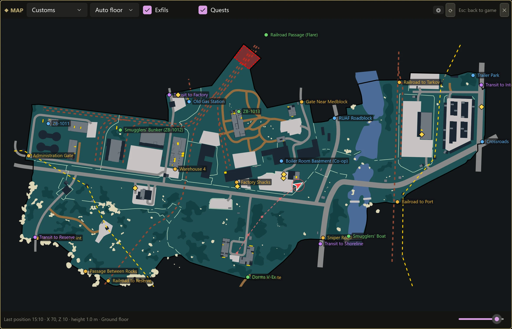
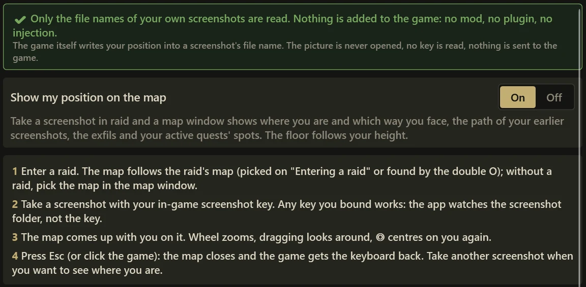
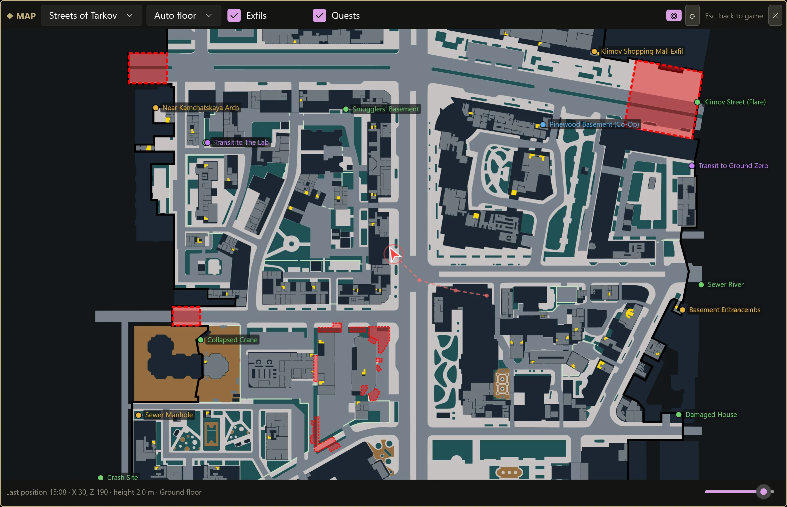
Tip: set the screenshot folder on the In-Game GPS page if yours is not the default one. Run the game in Borderless or Windowed mode so the map window can show on top.
The GPS map now shows the way you want: a small round mini map in a corner of the game, the map window over the game, or the map inside the app on your second monitor. Take a screenshot and only your position moves.
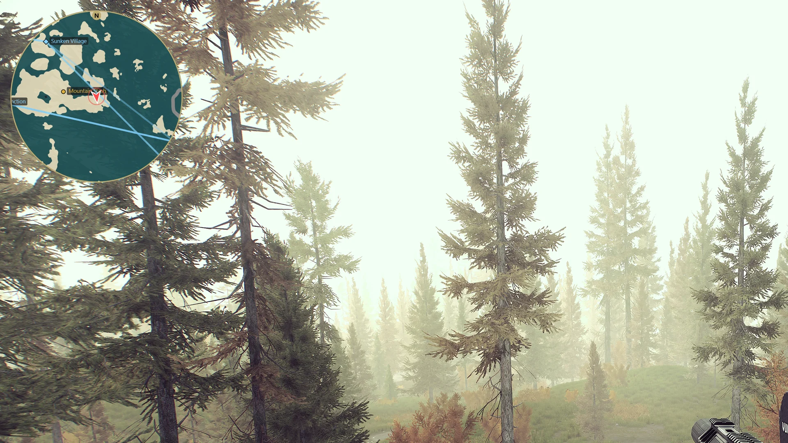
Pick one on the In-Game GPS page. Every screenshot moves you on it.
The big map window opens over the game; Esc takes you back.
A round map around you in a corner of the screen for a few seconds. Pick the corner, size and zoom; keep north up or let it turn with you. It never takes the mouse or the keyboard.
The map stays on inside the app (In-Game GPS → Map). Put it on your second monitor: nothing pops up over the game.
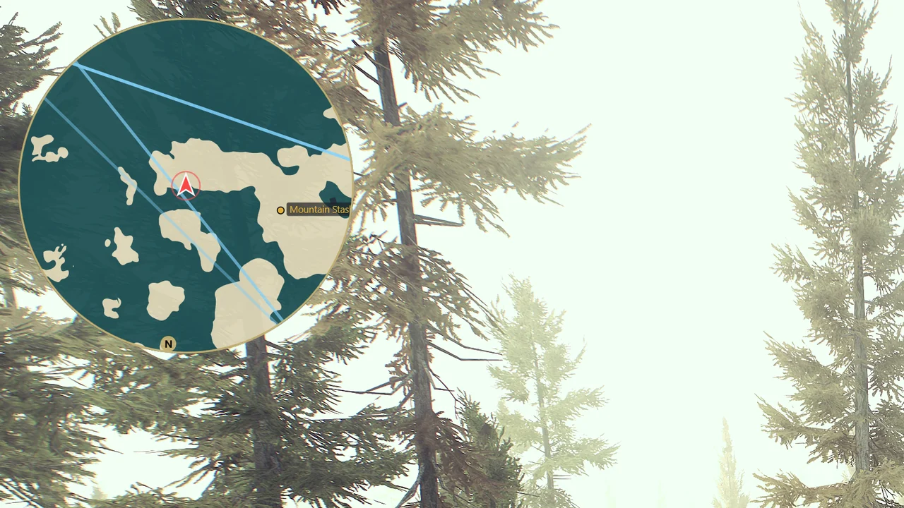
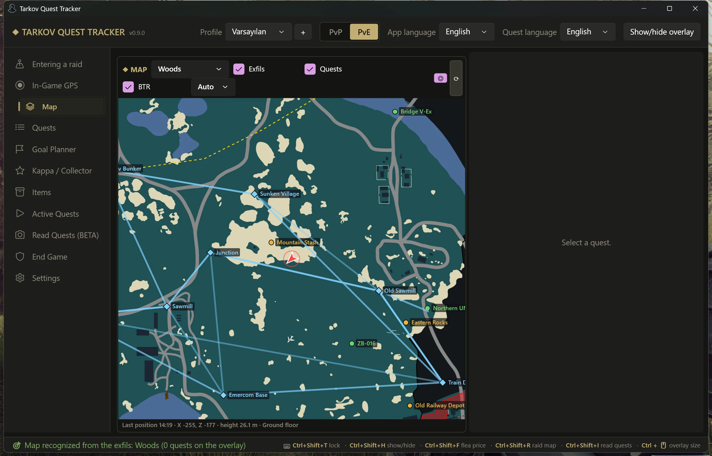
Like the map window, it only reads your screenshots' file names: no mod, no injection. Run the game in Borderless or Windowed mode so the mini map can show on top.
Knight, Big Pipe and Birdeye roam Customs, Woods, Shoreline and Lighthouse. The tracker shows where players last reported them, so you know which map to pick for them, or which one to avoid.
The reports follow the PvP | PvE switch at the top: PvP shows the PvP reports, PvE the PvE ones.
On "Entering a raid": the map they were last seen on and how long ago, plus the last 5 reports. That map's card gets a GOONS badge.
Refreshed every 5 minutes while the app runs, or right away with ⟳. "Goon Tracker ↗" opens the full site for that mode.
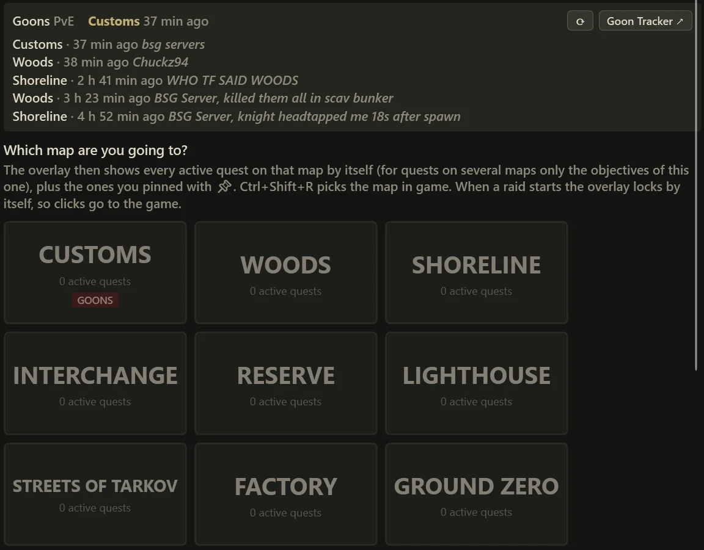
Reports come from players on tarkov-goon-tracker.com, so they can be wrong or late. The tracker only reads that public page; nothing is sent from your game.
On Woods, Streets of Tarkov and Lighthouse the BTR drives fixed routes on a timetable: it spawns at a set raid time, waits at each stop and goes round again. From the raid time left, the tracker estimates where it is and when it reaches each stop.
Double O in raid: the map and the raid time left are read off the exfil list. The BTR timetable starts from there.
One line under the raid time: where the BTR is heading and its ETA, or which stop it waits at and for how long.
Take a screenshot: the map window shows the routes it may be on, every stop with its ETA and where the BTR should be now.
On the raid page, press Seen next to the stop where you spot the BTR: the times line up with it and routes that don't fit are dropped.
The times are estimates (the spawn time varies by about a minute); one Seen brings them much closer. Each view can be turned off in Settings. Nothing is read from the game other than the raid clock the double O already reads.
Tour, Falling Skies, Batya, The Unheard, Blue Fire, They Are Already Here, Accidental Witness, The Labyrinth, Boreas and The Ticket: every step in order, the walkthrough right under it, and the choices you make along the way.
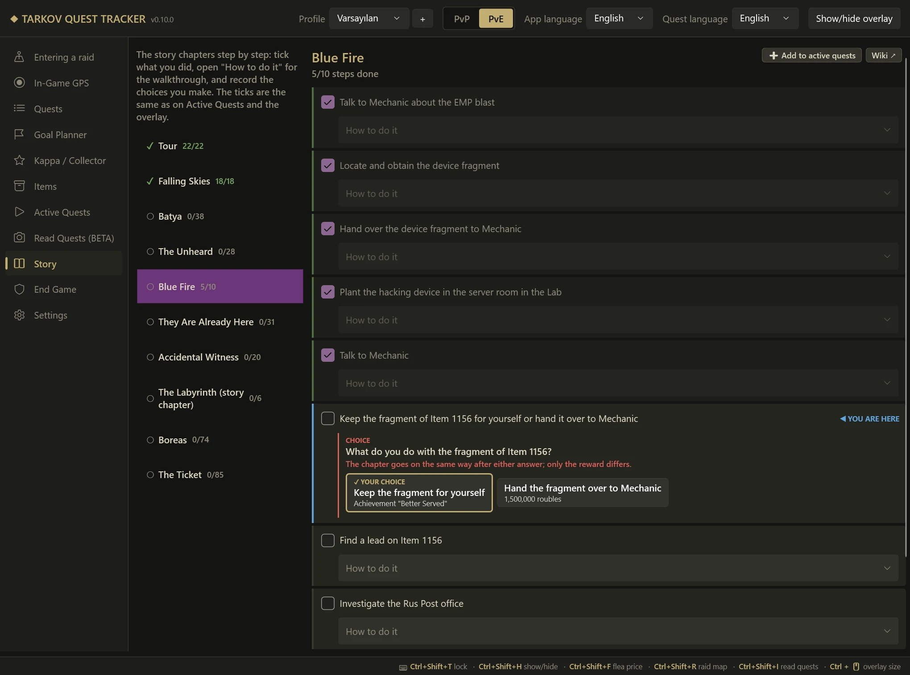
Where a chapter asks you to choose, the page shows every answer and what it gives, so you decide before you click in game.
Point of no return: it decides which endings of The Ticket stay open.
The chapter goes on the same way after either answer; only the reward differs.
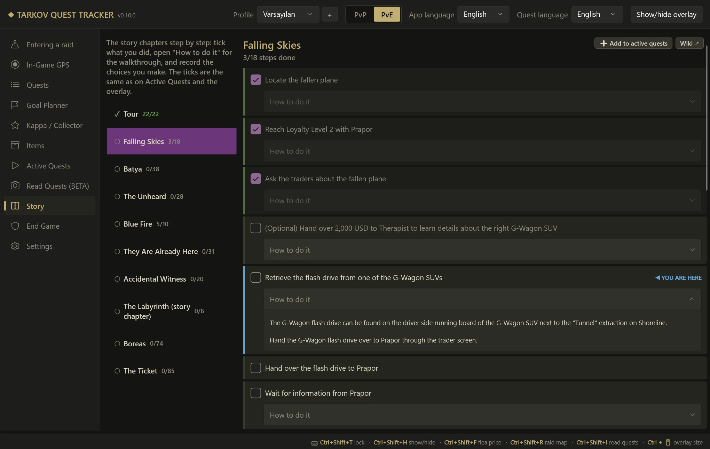
The Ticket has its own page: the End Game planner below works out its 4 endings and the route to the one you want.
The Ticket has 4 endings and 3 point-of-no-return decisions. The End Game guide shows which endings you can still reach, which way to go and where you are right now.
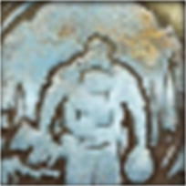
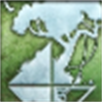
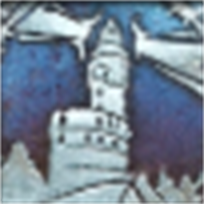
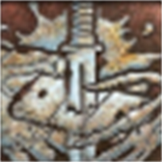
Open the End Game tab, or make The Ticket a goal in the Goal Planner: the whole guide appears right under its quest chain.
Click the choices you already made in game: the armored case, working with Kerman, the evidence. Every option shows which endings it keeps open. Click again to undo.
Press "Make target" on an ending. The decisions ahead get a "Pick this for your target" mark, and you are warned if your choices already closed that ending.
Every step, achievement (Easy Way, U Turn, Will It Blow, Little Triumph…) and the escape rules are listed in order. Tick what you did; "You are here" marks the next step.
PvP and PvE objectives differ (e.g. Co-Op extracts vs. 5 PMC kills without killing Scavs) and the guide shows the ones for your mode. Choices are saved per profile and mode. Based on the community "Story Endings" flowchart v1.7.6 by Callsign_Smokey / Kay08x.
Real screenshots from the app. No mockups.
We take account security very seriously. Here is exactly how EFT Quest Helper works under the hood.
Every release is uploaded to VirusTotal automatically when it is built. You can compare the SHA-256 with the file you downloaded.
Notice: EFT Quest Helper is an independent fan project not affiliated with Battlestate Games. Always play Tarkov in Borderless or Windowed mode to allow Windows to render overlays.
No complex configuration or setup required. Up and running in less than 60 seconds.
Download the latest release zip from GitHub, extract it anywhere and run TarkovQuestTracker.exe. No installation needed.
In Escape from Tarkov display settings, select Borderless or Windowed mode (Windows cannot overlay exclusive fullscreen).
Mark your completed quests or pick a goal: the quests you can do now become active. Pin the ones you want on the overlay with 📌.
In raid press O twice (auto-detect) or Ctrl+Shift+R to pick the map: the overlay shows that map's quests and the raid time left. Ctrl+Shift+T locks it so clicks go to the game.
Over 870+ quests updated with objectives, keys, guides, and rewards.
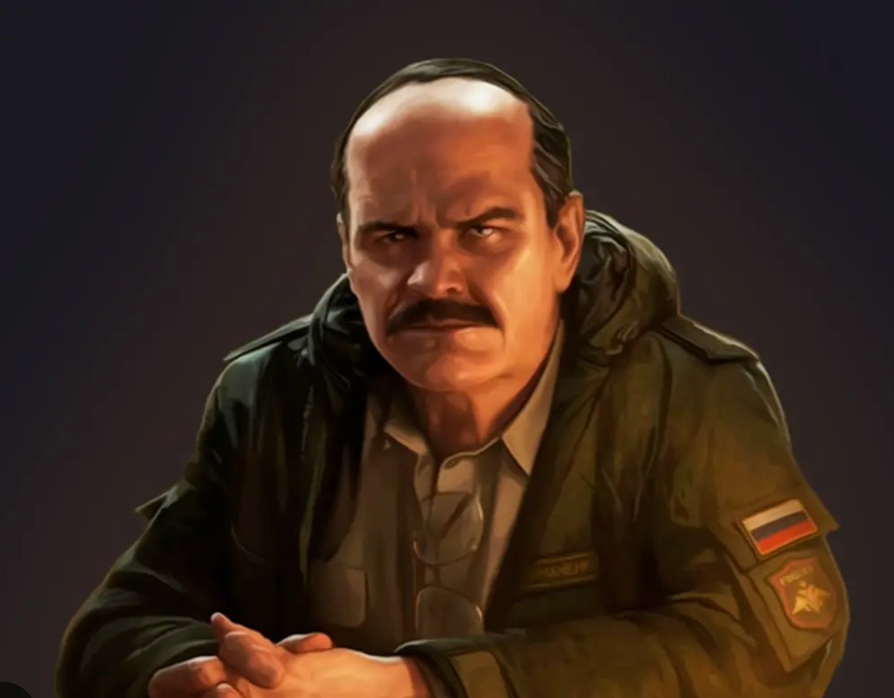
Prapor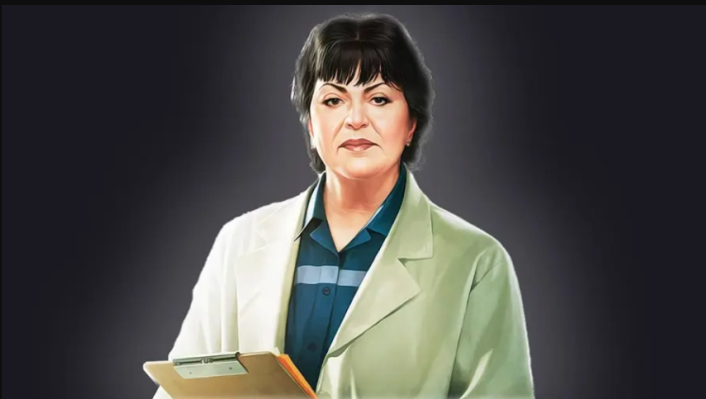
Therapist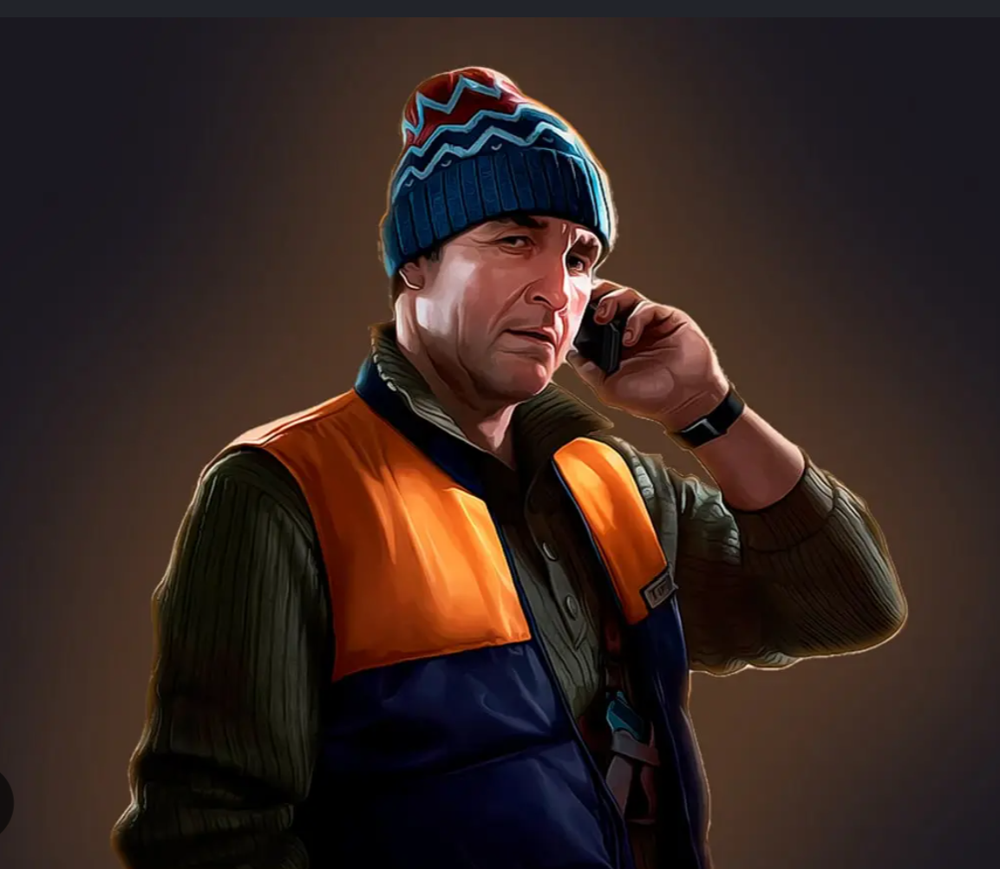
Skier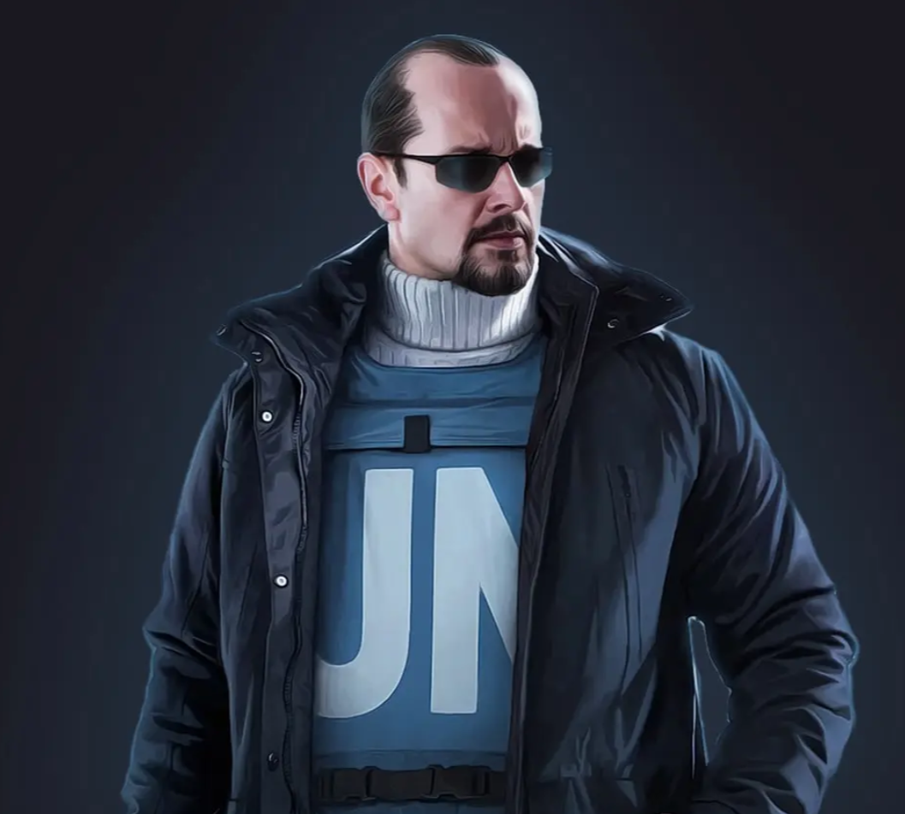
Peacekeeper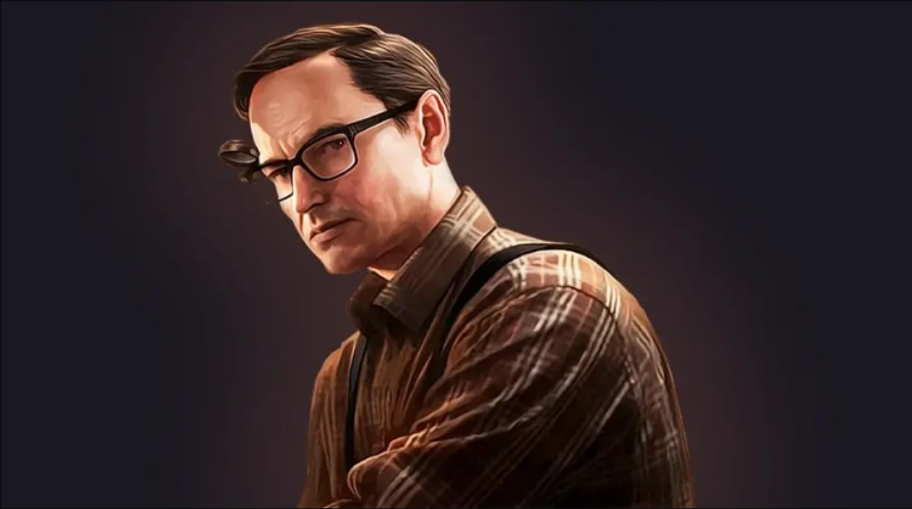
Mechanic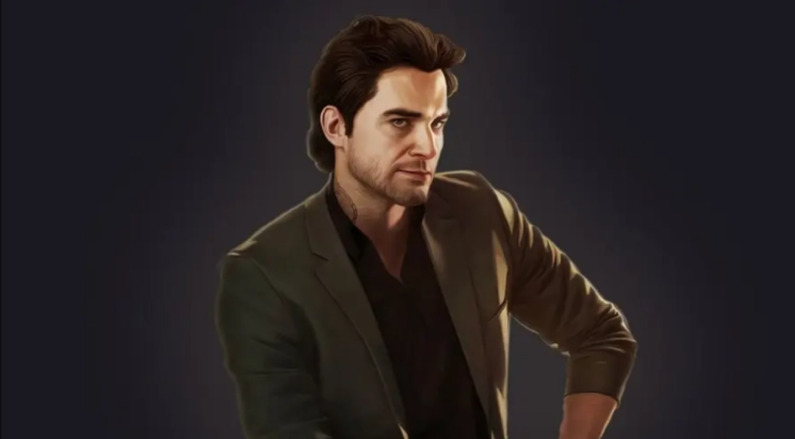
Ragman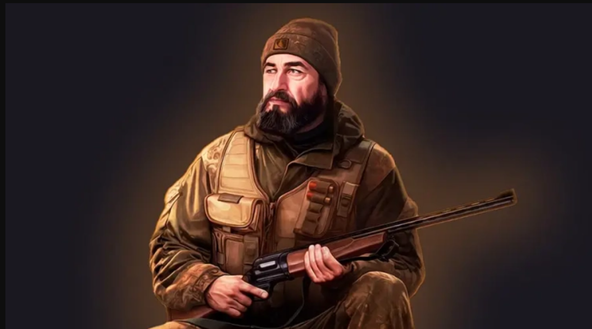
Jaeger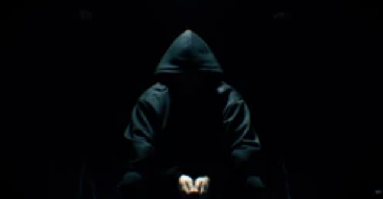
Fence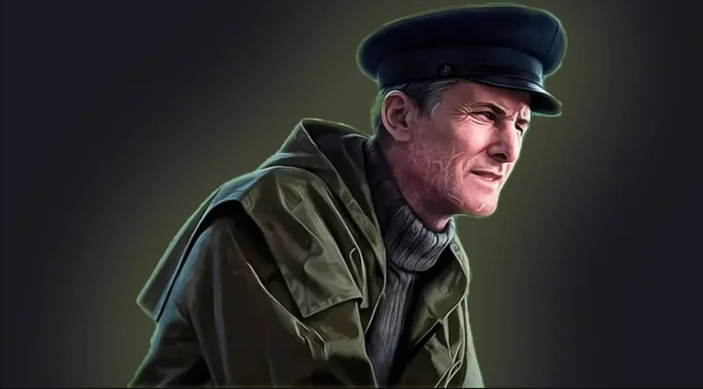
Lightkeeper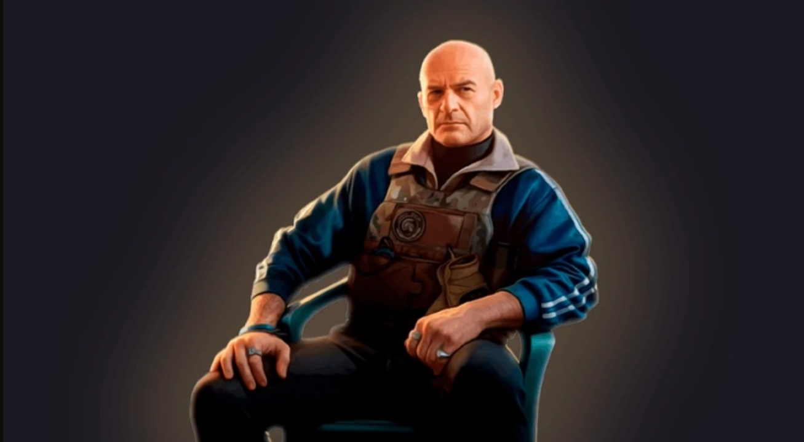
Ref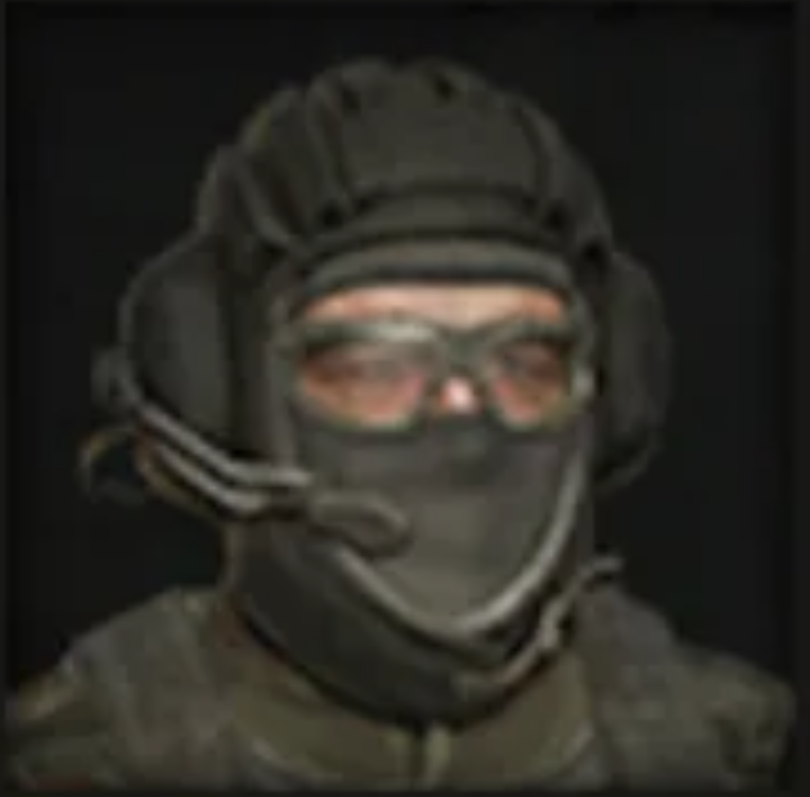
BTR Driver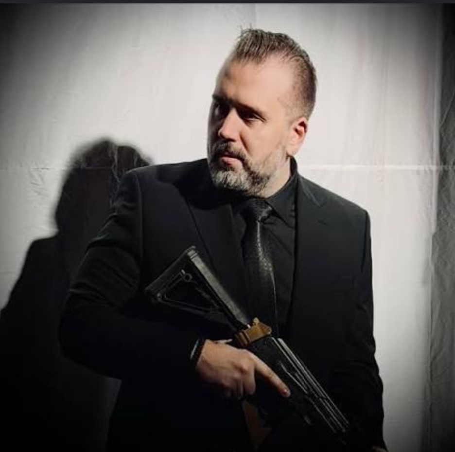
Story ChaptersWhen you take a screenshot in raid, the game itself writes your position into the file name. The app watches your screenshot folder (Documents\Escape from Tarkov\Screenshots) and reads that name, so whatever key you bound for screenshots in the game works: there is no extra hotkey. The picture is never opened, and nothing touches the game.
It works like a screenshot tool: it takes a picture of the screen and reads the text with the OCR built into Windows. It never touches the game: no memory reading, no injection, no fake key or mouse input; you scroll the list yourself. Pictures stay in memory and are never saved or uploaded.
The standalone release build has .NET embedded, so you can just run the executable directly on any modern Windows 10/11 64-bit PC.
Make sure Escape from Tarkov is set to 'Borderless' or 'Windowed' mode in the graphics settings. Windows does not allow any external window to render over an exclusive fullscreen game.
The raid, yes: press O twice in raid and the map and raid time are read off the exfil list at the top right of the screen (Windows OCR, no keyboard hook, nothing saved). Objective progress, no: the game's memory and network packets are never read, so you tick objectives yourself.
Yes! Open Settings in the app and click 'Export'. You can import the resulting file on any PC, or copy the data\profiles folder next to TarkovQuestTracker.exe.
Your progress lives in the data\profiles folder next to the exe. Extract the new release to a new folder and copy data\profiles over, or use Export in the old version and Import in the new one.
No. The app never hooks the keyboard and never reads your keys: O goes to the game as always. It only notices that the exfil list is on screen, by reading the top-right corner of the screen with Windows OCR while the game is in front. You can turn it off at the top of the "Entering a raid" page.